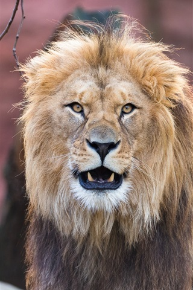
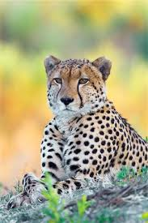
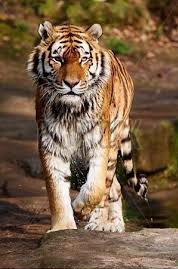
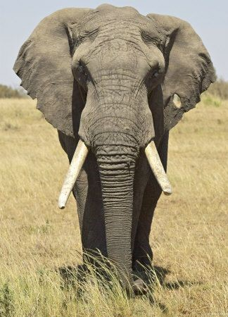
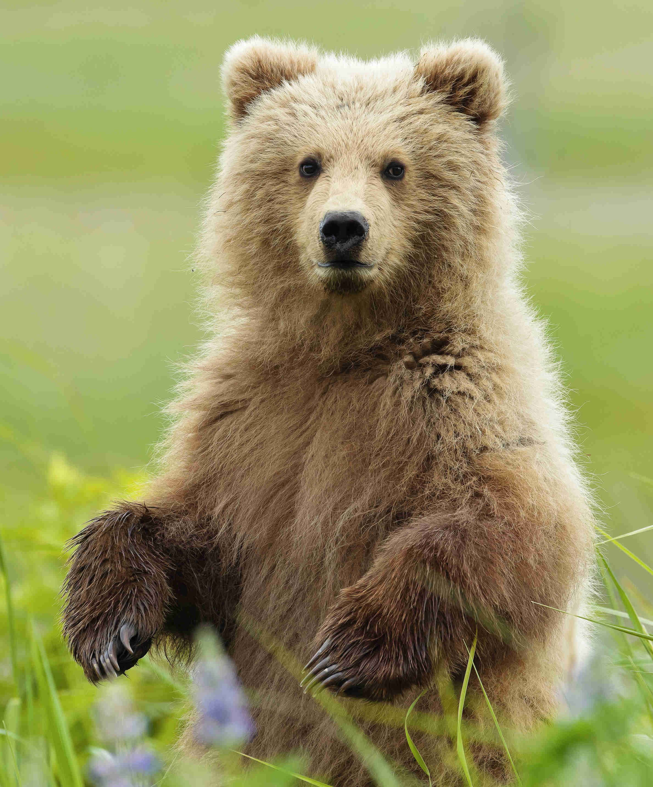

Some Thing About Wildlife
Lion
The lion is a species in the family Felidae and a member of the genus Panthera. It has a muscular, deep-chested body, short, rounded head,round ears, and a hairy tuft at the end of its tail. It is sexually dimorphic; adult male lions have a prominent mane.
Lifespan: 10 – 14 years (Adult, In the wild)
Scientific name: Panthera leo
Family: Felidae
Speed: 80 km/h (Maximum, In Short Bursts)
Mass: Male: 190 kg (Adult), Female: 130 kg (Adult)
Diet: Carnivore

Cheetah
The cheetah is a large cat native to Africa and central Iran. It is the fastest land animal, capable of running at 80 to 128 km/h, and as such hasseveral adaptations for speed, including a light build, long thin legs and a long tail.
Speed: 80 – 130 km/h (Running, Estimated)
Scientific name: Acinonyx jubatus
Conservation status: Vulnerable (Population decreasing) Encyclopedia of Life
Mass: 21 – 72 kg (Adult)
Height: 70 – 90 cm (Adult, At Shoulder)
Length: 1.1 – 1.5 m (Adult, Head and body)

Tiger
The tiger is the largest extant cat species and a member of the genus Panthera. It is most recognisable for its dark vertical stripes onorange-brown fur with a lighter underside. It is an apex predator, primarily preying on ungulates such as deer and wild boar.
Scientific name: Panthera tigris
Speed: 49 – 65 km/h (Adult, In Short Bursts)
Lifespan: 10 – 15 years (In the wild)
Conservation status: Endangered (Population decreasing) Encyclopedia of Life
Mass: Male: 90 – 310 kg (Adult), Female: 65 – 170 kg (Adult)
Diet: Carnivore

Elephant
Elephants are mammals of the family Elephantidae and the largest existing land animals. Three species are currently recognised: the African bushelephant, the African forest elephant, and the Asian elephant. Elephantidae is the only surviving family of the order Proboscidea; extinct members
include the mastodons.
Length: Asian elephant: 5.5 – 6.5 m
Phylum: Chordata
Lifespan: African bush elephant: 60 – 70 years, Asian elephant: 48 years, African forest elephant: 60 – 70 years
Mass: African bush elephant: 6,000 kg, Asian elephant: 4,000 kg, African forest elephant: 2,700 kg
Gestation period: African bush elephant: 22 months, Asian elephant: 18 – 22 months
Height: African bush elephant: 3.2 m, Asian elephant: 2.8 m

Bear
Bears are carnivoran mammals of the family Ursidae. They are classified as caniforms, or doglike carnivorans. Although only eight speciesof bears are extant, they are widespread, appearing in a wide variety of habitats throughout the Northern Hemisphere and partially in the Southern Hemisphere.
Lifespan: Giant panda: 20 years
Speed: Polar bear: 40 km/h
Scientific name: Ursidae
Family: Ursidae; G. Fischer de Waldheim, 1817
Mass: Polar bear: 450 kg, Giant panda: 70 – 100 kg,
Height: Polar bear: 1.8 – 2.4 m, Giant panda: 60 – 90 cm, Brown bear: 70 – 150 cm

Giraffe
The giraffe is an African artiodactyl mammal, the tallest living terrestrial animal and the largest ruminant. It is traditionally consideredto be one species, Giraffa camelopardalis, with nine subspecies.
Height: Northern giraffe: 4.6 – 6.1 m
Eats: Acacia
Mass: Northern giraffe: 800 kg Encyclopedia of Life
Scientific name: Giraffa
Daily sleep: 4.6 hours (In captivity)
Speed: 60 km/h (Maximum, Sprint)
Habitats: Savanna, Grassland, Woodland